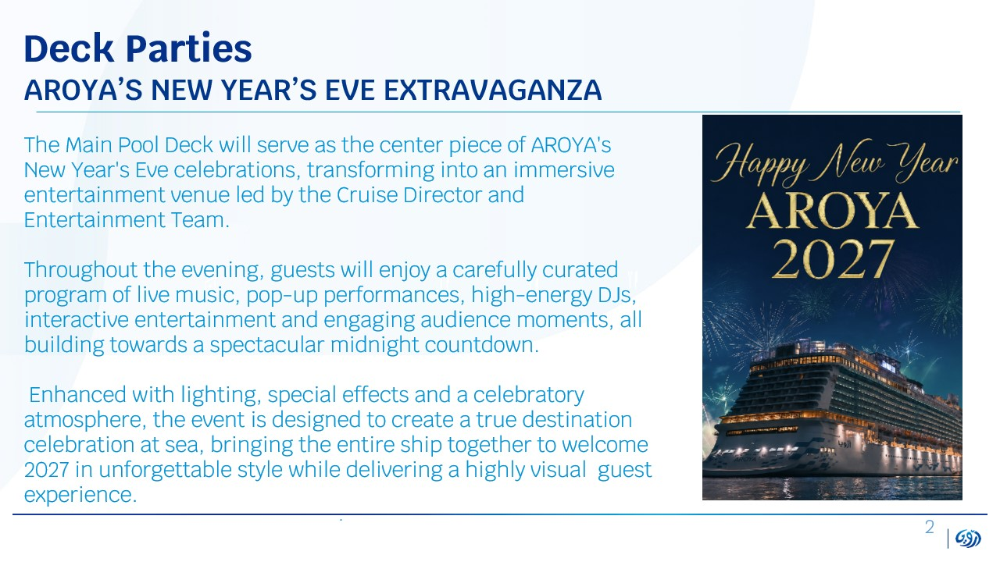

Вечеринка 1
Новогоднее шоу на палубе бассейна
Главный бассейн становится центром новогодних торжеств AROYA — иммерсивной развлекательной площадкой под руководством круиз-директора и команды развлечений.
Весь вечер гостей ждёт тщательно выстроенная программа: живая музыка, pop-up выступления, энергичные DJ-сеты, интерактив и вовлечение публики — всё это ведёт к грандиозному отсчёту до полуночи.
Свет, спецэффекты и праздничная атмосфера создают настоящее торжество в открытом море: весь лайнер объединяется, чтобы встретить 2027 год ярко и зрелищно.